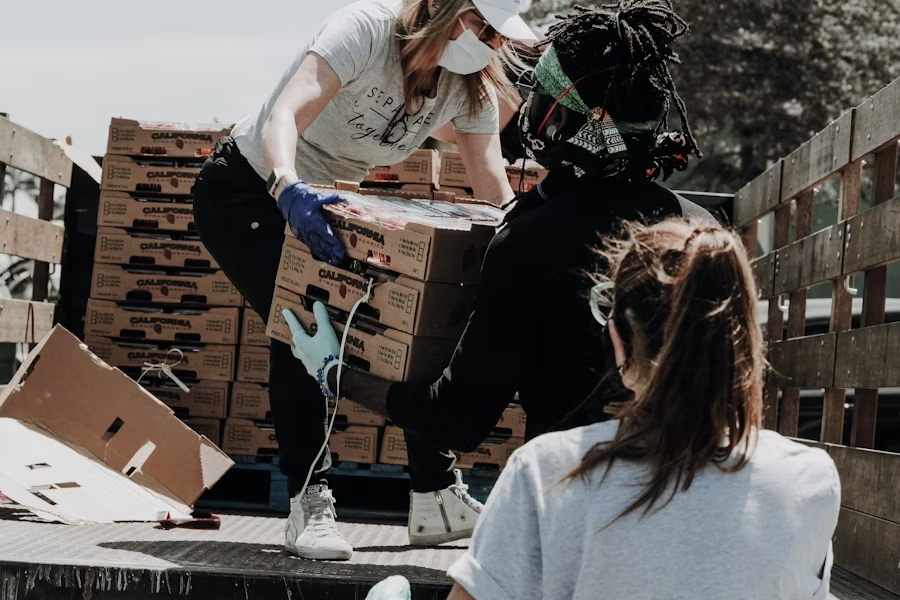

Missão
Oferecer oportunidades de desenvolvimento humano e social por meio de oficinas educativas e assistência direta.
A ONG Esperança Viva é uma organização da sociedade civil dedicada a promover a inclusão social, educação de qualidade e apoio assitencial a comunidades vulneráveis em Tubarão e região.
Desde a nossa fundação, acreditamos que a união entre engajamento comunitário e presença ativa transforma a realidade de centenas de famílias todos os anos.

Oferecer oportunidades de desenvolvimento humano e social por meio de oficinas educativas e assistência direta.
Ser referência regional na transformação comunitária e na construção de uma sociedade mais justa e inclusiva.
Transparência, empatia, respeito à diversidade, responsabilidade social e cooperação contínua.
Quer tirar dúvidas, propor parcerias ou conhecer nossa sede física? entre em contato conosco: